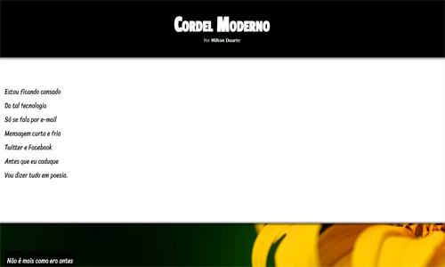
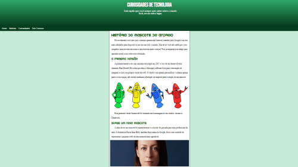

Projeto Curiosidades de Tecnologia
Site feito com o intuito de ser um portal de notícias e curiosidades sobre tecnologia.
AcessarSite feito com o intuito de ser um portal de notícias e curiosidades sobre tecnologia.
Acessar